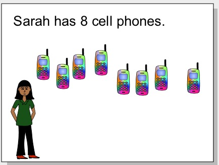
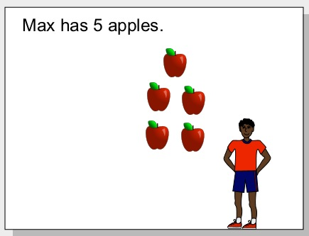

Teaching Point:
Today we will review using the A-Tool in Frames.
Writing in Frames
Today we are going to begin writing our Number Story. A number story is a simple math problem told as a story. Here are some examples:
James has 5 apples. He gives 3 to Sally. How many apples does James ahve left?
Sejin has 12 pencils. Bryan has 11 pencils. How many pencils do Sejin and Bryan have together?
Lena has 4 dollars. She needs 7 dollars to buy the book she likes. How many more dollars does Lena need so she can buy the book?
We are going to use the A tool to write our number story. We will later use the library to get pictures to show what our story looks like. We do not want to write our whole number story today. Only the first sentence. So you should write something like "Max has 5 books", or "Sheraine has 15 pieces of candy". Then use the library to get a picture of things you are talking about. Like this:
 Today's Assignment
Use the A Tool to write the first sentence of your number story. Use the Library to get the right number of pictures of the object your number story is about.
Back to School Portal